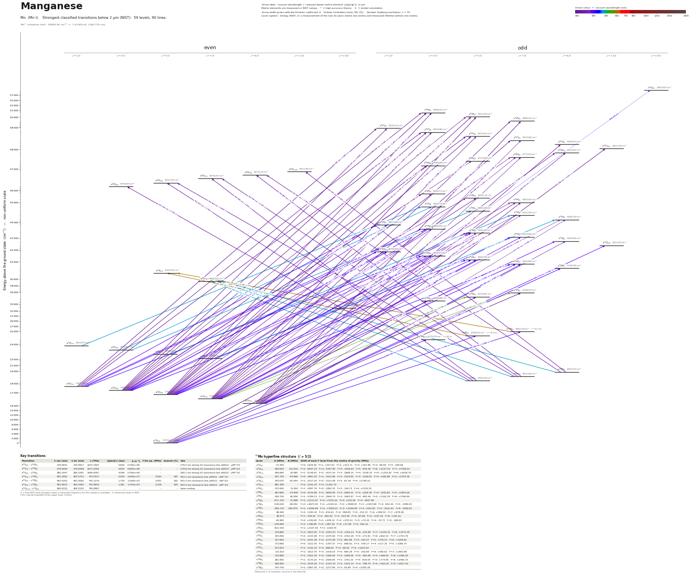

Manganese energy level diagram
Energy levels and transitions of neutral manganese (Mn I): the 90 strongest classified lines below 2 µm from the NIST Atomic Spectra Database and the 59 levels they connect, each line with its vacuum wavelength, frequency and, for 89 of them, the reduced dipole matrix element derived from the NIST transition rate. Measured lifetimes, transition rates, hyperfine constants and isotope shifts from the literature are included, each with its citation.
Hover a line or a level to isolate it, click to keep it selected. Scroll to zoom, drag to move.

Download: diagram (PDF) diagram (SVG) transitions (CSV) levels (CSV) source code

Key transitions of manganese
| Transition | λ vac (nm) | λ air (nm) | ν (THz) | |⟨J‖er‖J′⟩| (ea₀) | A (s⁻¹) | Γ/2π up. (MHz) | branch (%) | Use |
|---|---|---|---|---|---|---|---|---|
| a 6S5/2 – y 6P°7/2 | 279.5641 | 279.4817 | 1072.3567 | 5.650 | 3.700e+08 | – | – | 279.5 nm strong UV resonance line a6S5/2 - y6P°7/2 |
| a 6S5/2 – y 6P°5/2 | 279.9094 | 279.8269 | 1071.0340 | 4.835 | 3.600e+08 | – | – | 279.8 nm strong UV resonance line a6S5/2 - y6P°5/2 |
| a 6S5/2 – y 6P°3/2 | 280.1907 | 280.1081 | 1069.9587 | 4.008 | 3.700e+08 | – | – | 280.1 nm strong UV resonance line a6S5/2 - y6P°3/2 |
| a 6S5/2 – z 6P°7/2 | 403.1892 | 403.0753 | 743.5527 | 2.054 | 1.630e+07 | 2.594 | 100 | 403.1 nm resonance line a6S5/2 - z6P°7/2 |
| a 6S5/2 – z 6P°5/2 | 403.4202 | 403.3062 | 743.1270 | 1.730 | 1.540e+07 | 2.451 | 100 | 403.3 nm resonance line a6S5/2 - z6P°5/2 |
| a 6S5/2 – z 6P°3/2 | 403.5623 | 403.4483 | 742.8653 | 1.381 | 1.470e+07 | 2.339 | 100 | 403.4 nm resonance line a6S5/2 - z6P°3/2 |
| a 4H13/2 – z 4I°15/2 | 404.6335 | 404.5193 | 740.8987 | – | – | – | – | laser-cooling |
λ, ν from NIST level energies unless a measured frequency for this isotope is available. A: measured value or NIST. Γ/2π: natural linewidth of the upper level, 1/(2πτ).
55Mn hyperfine structure (I = 5/2)
| Level | A (MHz) | B (MHz) | Shift of each F level from the centre of gravity (MHz) |
|---|---|---|---|
| a 6S5/2 | -71.950 | – | F=0: +629.56 F=1: +557.61 F=2: +413.71 F=3: +197.86 F=4: -89.94 F=5: -449.69 |
| a 6D9/2 | 509.650 | 131.910 | F=2: -6947.23 F=3: -5457.85 F=4: -3456.63 F=5: -930.36 F=6: +2137.43 F=7: +5766.54 |
| a 6D7/2 | 458.680 | 20.985 | F=1: -5148.91 F=2: -4237.54 F=3: -2868.25 F=4: -1038.33 F=5: +1255.82 F=6: +4018.70 |
| a 6D5/2 | 437.700 | -44.969 | F=0: -3861.35 F=1: -3412.86 F=2: -2519.92 F=3: -1190.63 F=4: +562.86 F=5: +2724.38 |
| a 6D3/2 | 470.670 | -65.954 | F=1: -2517.18 F=2: -1523.08 F=3: -81.39 F=4: +1748.52 |
| a 6D1/2 | 881.390 | – | F=2: -1542.43 F=3: +1101.74 |
| z 6P°3/2 | 572.600 | 11.992 | F=1: -2997.76 F=2: -1862.15 F=3: -149.75 F=4: +2150.25 |
| z 6P°5/2 | 467.680 | -74.948 | F=0: -4144.66 F=1: -3659.00 F=2: -2694.41 F=3: -1264.38 F=4: +610.83 F=5: +2904.26 |
| z 6P°7/2 | 428.700 | 62.956 | F=1: -4789.15 F=2: -3949.74 F=3: -2683.87 F=4: -983.46 F=5: +1162.29 F=6: +3766.86 |
| y 6P°3/2 | -971.330 | 17.988 | F=1: +5112.07 F=2: +3155.02 F=3: +232.94 F=4: -3637.99 |
| y 6P°5/2 | -539.630 | -68.952 | F=0: +4673.50 F=1: +4150.41 F=2: +3098.05 F=3: +1503.98 F=4: -650.40 F=5: -3389.93 |
| y 6P°7/2 | -389.730 | -185.870 | F=1: +4284.89 F=2: +3558.53 F=3: +2449.09 F=4: +932.65 F=5: -1022.63 F=6: -3456.61 |
| z 6D°9/2 | 86.940 | – | F=2: -1195.42 F=3: -934.61 F=4: -586.85 F=5: -152.15 F=6: +369.50 F=7: +978.08 |
| z 6D°7/2 | 38.973 | – | F=1: -438.45 F=2: -360.50 F=3: -243.58 F=4: -87.69 F=5: +107.18 F=6: +341.01 |
| z 6D°5/2 | -26.981 | – | F=0: +236.08 F=1: +209.10 F=2: +155.14 F=3: +74.20 F=4: -33.73 F=5: -168.63 |
| z 6D°3/2 | -149.900 | – | F=1: +786.98 F=2: +487.18 F=3: +37.48 F=4: -562.12 |
| z 6D°1/2 | -821.430 | – | F=2: +1437.50 F=3: -1026.79 |
| z 6F°11/2 | 179.880 | – | F=3: -2923.05 F=4: -2203.53 F=5: -1304.13 F=6: -224.85 F=7: +1034.31 F=8: +2473.35 |
| z 6F°9/2 | 155.890 | – | F=2: -2143.49 F=3: -1675.82 F=4: -1052.26 F=5: -272.81 F=6: +662.53 F=7: +1753.76 |
| z 6F°7/2 | 137.900 | – | F=1: -1551.38 F=2: -1275.58 F=3: -861.88 F=4: -310.27 F=5: +379.23 F=6: +1206.62 |
| z 6F°5/2 | 173.880 | – | F=0: -1521.45 F=1: -1347.57 F=2: -999.81 F=3: -478.17 F=4: +217.35 F=5: +1086.75 |
| z 6F°3/2 | 272.810 | – | F=1: -1432.25 F=2: -886.63 F=3: -68.20 F=4: +1023.04 |
| z 4F°9/2 | 131.910 | – | F=2: -1813.76 F=3: -1418.03 F=4: -890.39 F=5: -230.84 F=6: +560.62 F=7: +1483.99 |
| z 4F°7/2 | 170.880 | – | F=1: -1922.40 F=2: -1580.64 F=3: -1068.00 F=4: -384.48 F=5: +469.92 F=6: +1495.20 |
| x 6P°7/2 | 281.800 | – | F=1: -3170.25 F=2: -2606.65 F=3: -1761.25 F=4: -634.05 F=5: +774.95 F=6: +2465.75 |
| x 6P°5/2 | 290.800 | – | F=0: -2544.50 F=1: -2253.70 F=2: -1672.10 F=3: -799.70 F=4: +363.50 F=5: +1817.50 |
| x 6P°3/2 | 374.740 | – | F=1: -1967.38 F=2: -1217.90 F=3: -93.69 F=4: +1405.28 |
Measured A, B constants; sources in the data file.
Listed Mn transitions below 2 µm
| Lower level | Upper level | λ vacuum (nm) | λ air (nm) | ν (THz) | Type | |⟨J‖er‖J′⟩| (ea₀) | A (s⁻¹) | Branching (%) | Source of matrix element / A |
|---|---|---|---|---|---|---|---|---|---|
| a 6S5/2 | y 6P°7/2 | 279.5641 | 279.4817 | 1072.3567 | E1 | 5.650 NIST | 3.700e+08 NIST | – | NIST ASD (accuracy C) |
| a 6S5/2 | y 6P°5/2 | 279.9094 | 279.8269 | 1071.0340 | E1 | 4.835 NIST | 3.600e+08 NIST | – | NIST ASD (accuracy C) |
| a 6S5/2 | y 6P°3/2 | 280.1907 | 280.1081 | 1069.9587 | E1 | 4.008 NIST | 3.700e+08 NIST | – | NIST ASD (accuracy C) |
| a 6D9/2 | v 6P°7/2 | 304.5464 | 304.4578 | 984.3901 | E1 | 2.521 NIST | 5.700e+07 NIST | – | NIST ASD (accuracy E) |
| a 6D7/2 | v 6P°5/2 | 305.5254 | 305.4366 | 981.2357 | E1 | 1.971 NIST | 4.600e+07 NIST | – | NIST ASD (accuracy E) |
| a 6D5/2 | v 6P°3/2 | 306.3021 | 306.2131 | 978.7477 | E1 | 0.859 NIST | 1.300e+07 NIST | – | NIST ASD (accuracy E) |
| a 6D7/2 | v 6P°7/2 | 306.6919 | 306.6028 | 977.5036 | E1 | 1.350 NIST | 1.600e+07 NIST | – | NIST ASD (accuracy E) |
| a 6D5/2 | v 6P°5/2 | 307.1161 | 307.0268 | 976.1536 | E1 | 1.277 NIST | 1.900e+07 NIST | – | NIST ASD (accuracy E) |
| a 6D3/2 | v 6P°3/2 | 307.4033 | 307.3141 | 975.2414 | E1 | 1.457 NIST | 3.700e+07 NIST | – | NIST ASD (accuracy E) |
| a 6D1/2 | v 6P°3/2 | 308.0536 | 307.9642 | 973.1827 | E1 | 0.961 NIST | 1.600e+07 NIST | – | NIST ASD (accuracy E) |
| a 6D3/2 | v 6P°5/2 | 308.2232 | 308.1337 | 972.6472 | E1 | 0.510 NIST | 3.000e+06 NIST | – | NIST ASD (accuracy E) |
| a 6D9/2 | y 6F°7/2 | 320.7832 | 320.6906 | 934.5640 | E1 | 0.361 NIST | 1.000e+06 NIST | – | NIST ASD (accuracy E) |
| a 6D9/2 | y 6F°9/2 | 321.3810 | 321.2881 | 932.8258 | E1 | 1.619 NIST | 1.600e+07 NIST | – | NIST ASD (accuracy E) |
| a 6D7/2 | y 6F°5/2 | 322.6961 | 322.6029 | 929.0241 | E1 | 0.698 NIST | 4.900e+06 NIST | – | NIST ASD (accuracy E) |
| a 6D9/2 | y 6F°11/2 | 322.9021 | 322.8089 | 928.4315 | E1 | 3.572 NIST | 6.400e+07 NIST | – | NIST ASD (accuracy D) |
| a 6D7/2 | y 6F°7/2 | 323.1645 | 323.0713 | 927.6775 | E1 | 2.160 NIST | 3.500e+07 NIST | – | NIST ASD (accuracy E) |
| a 6D9/2 | y 6D°9/2 | 324.1332 | 324.0397 | 924.9050 | E1 | 1.037 NIST | 6.400e+06 NIST | – | NIST ASD (accuracy E) |
| a 6D5/2 | y 6F°3/2 | 324.1548 | 324.0613 | 924.8435 | E1 | 0.812 NIST | 9.800e+06 NIST | – | NIST ASD (accuracy E) |
| a 6D5/2 | y 6F°5/2 | 324.4711 | 324.3775 | 923.9421 | E1 | 2.315 NIST | 5.300e+07 NIST | – | NIST ASD (accuracy E) |
| a 6D3/2 | y 6F°1/2 | 325.2071 | 325.1133 | 921.8510 | E1 | 0.884 NIST | 2.300e+07 NIST | – | NIST ASD (accuracy E) |
| a 6D3/2 | y 6F°3/2 | 325.3884 | 325.2946 | 921.3372 | E1 | 1.106 NIST | 1.800e+07 NIST | – | NIST ASD (accuracy E) |
| a 6D9/2 | y 6D°7/2 | 325.4972 | 325.4033 | 921.0293 | E1 | 0.481 NIST | 1.700e+06 NIST | – | NIST ASD (accuracy E) |
| a 6D3/2 | y 6F°5/2 | 325.7071 | 325.6132 | 920.4357 | E1 | 2.262 NIST | 5.000e+07 NIST | – | NIST ASD (accuracy E) |
| a 6D1/2 | y 6F°1/2 | 325.9349 | 325.8410 | 919.7923 | E1 | 1.821 NIST | 9.700e+07 NIST | – | NIST ASD (accuracy E) |
| a 6D1/2 | y 6F°3/2 | 326.1171 | 326.0231 | 919.2785 | E1 | 1.613 NIST | 3.800e+07 NIST | – | NIST ASD (accuracy E) |
| a 6D7/2 | y 6D°9/2 | 326.5647 | 326.4706 | 918.0185 | E1 | 1.551 NIST | 1.400e+07 NIST | – | NIST ASD (accuracy E) |
| a 6D7/2 | y 6D°7/2 | 327.9493 | 327.8548 | 914.1427 | E1 | 0.356 NIST | 9.100e+05 NIST | – | NIST ASD (accuracy E) |
| a 6D5/2 | y 6D°7/2 | 329.7827 | 329.6877 | 909.0607 | E1 | 0.461 NIST | 1.500e+06 NIST | – | NIST ASD (accuracy E) |
| a 6D3/2 | y 6D°5/2 | 331.2848 | 331.1895 | 904.9388 | E1 | 0.464 NIST | 2.000e+06 NIST | – | NIST ASD (accuracy E) |
| a 6D5/2 | y 6D°3/2 | 333.1652 | 333.0694 | 899.8313 | E1 | 0.735 NIST | 7.400e+06 NIST | – | NIST ASD (accuracy E) |
| z 8P°5/2 | e 8D7/2 | 353.2836 | 353.1827 | 848.5886 | E1 | 2.815 measured | 4.550e+07 measured | – | Den Hartog, Lawler, Sobeck, Sneden, Cowan, ApJS 194, 35 (2011), Table 3 (recommended valu… |
| z 8P°5/2 | e 8D5/2 | 353.2998 | 353.1989 | 848.5497 | E1 | 3.738 measured | 1.070e+08 measured | – | Den Hartog, Lawler, Sobeck, Sneden, Cowan, ApJS 194, 35 (2011), Table 3 (recommended valu… |
| z 8P°5/2 | e 8D3/2 | 353.3116 | 353.2106 | 848.5215 | E1 | 3.790 measured | 1.650e+08 measured | – | Den Hartog, Lawler, Sobeck, Sneden, Cowan, ApJS 194, 35 (2011), Table 3 (recommended valu… |
| z 8P°7/2 | e 8D9/2 | 354.8804 | 354.7790 | 844.7705 | E1 | 4.720 measured | 1.010e+08 measured | – | Den Hartog, Lawler, Sobeck, Sneden, Cowan, ApJS 194, 35 (2011), Table 3 (recommended valu… |
| z 8P°7/2 | e 8D7/2 | 354.9033 | 354.8019 | 844.7159 | E1 | 4.264 measured | 1.030e+08 measured | – | Den Hartog, Lawler, Sobeck, Sneden, Cowan, ApJS 194, 35 (2011), Table 3 (recommended valu… |
| z 8P°7/2 | e 8D5/2 | 354.9197 | 354.8183 | 844.6769 | E1 | 2.809 measured | 5.960e+07 measured | – | Den Hartog, Lawler, Sobeck, Sneden, Cowan, ApJS 194, 35 (2011), Table 3 (recommended valu… |
| z 8P°9/2 | e 8D11/2 | 357.0509 | 356.9490 | 839.6350 | E1 | 6.649 measured | 1.640e+08 measured | – | Den Hartog, Lawler, Sobeck, Sneden, Cowan, ApJS 194, 35 (2011), Table 3 (recommended valu… |
| z 8P°9/2 | e 8D9/2 | 357.0819 | 356.9800 | 839.5622 | E1 | 3.795 measured | 6.410e+07 measured | – | Den Hartog, Lawler, Sobeck, Sneden, Cowan, ApJS 194, 35 (2011), Table 3 (recommended valu… |
| a 6D9/2 | x 6P°7/2 | 357.8889 | 357.7868 | 837.6690 | E1 | 4.125 NIST | 9.400e+07 NIST | – | NIST ASD (accuracy D) |
| a 6D5/2 | x 6P°3/2 | 359.6133 | 359.5107 | 833.6524 | E1 | 1.286 NIST | 1.800e+07 NIST | – | NIST ASD (accuracy E) |
| a 6D7/2 | x 6P°7/2 | 360.8555 | 360.7526 | 830.7825 | E1 | 2.066 NIST | 2.300e+07 NIST | – | NIST ASD (accuracy E) |
| a 6D5/2 | x 6P°5/2 | 360.9510 | 360.8481 | 830.5627 | E1 | 2.239 NIST | 3.600e+07 NIST | – | NIST ASD (accuracy E) |
| a 6D3/2 | x 6P°3/2 | 361.1322 | 361.0292 | 830.1460 | E1 | 1.976 NIST | 4.200e+07 NIST | – | NIST ASD (accuracy E) |
| a 6D3/2 | x 6P°5/2 | 362.4813 | 362.3780 | 827.0563 | E1 | 1.170 NIST | 9.700e+06 NIST | – | NIST ASD (accuracy E) |
| a 6D5/2 | x 6P°7/2 | 363.0766 | 362.9731 | 825.7004 | E1 | 0.727 NIST | 2.800e+06 NIST | – | NIST ASD (accuracy E) |
| a 6D7/2 | z 4F°7/2 | 367.0877 | 366.9831 | 816.6781 | E1 (intercombination) | 0.351 NIST | 6.300e+05 NIST | – | NIST ASD (accuracy C) |
| a 6D9/2 | z 4F°9/2 | 367.1548 | 367.0502 | 816.5288 | E1 (intercombination) | 0.380 NIST | 5.900e+05 NIST | – | NIST ASD (accuracy C) |
| a 6D5/2 | z 4F°7/2 | 369.3863 | 369.2812 | 811.5960 | E1 (intercombination) | 0.303 NIST | 4.600e+05 NIST | – | NIST ASD (accuracy C) |
| a 6D7/2 | z 4F°9/2 | 370.2777 | 370.1723 | 809.6423 | E1 (intercombination) | 0.464 NIST | 8.600e+05 NIST | – | NIST ASD (accuracy C) |
| a 6D9/2 | z 6F°9/2 | 379.1284 | 379.0207 | 790.7413 | E1 | 1.233 NIST | 5.650e+06 NIST | – | NIST ASD (accuracy B) |
| a 6D7/2 | z 6F°5/2 | 380.0331 | 379.9252 | 788.8589 | E1 | 0.468 NIST | 1.350e+06 NIST | – | NIST ASD (accuracy B) |
| a 6D9/2 | z 6F°11/2 | 380.7792 | 380.6711 | 787.3131 | E1 | 4.392 NIST | 5.900e+07 NIST | – | NIST ASD (accuracy B) |
| a 6D7/2 | z 6F°7/2 | 381.0674 | 380.9592 | 786.7178 | E1 | 1.768 NIST | 1.430e+07 NIST | – | NIST ASD (accuracy B) |
| a 6D5/2 | z 6F°3/2 | 381.7824 | 381.6741 | 785.2443 | E1 | 0.678 NIST | 4.190e+06 NIST | – | NIST ASD (accuracy B) |
| a 6D7/2 | z 6F°9/2 | 382.4592 | 382.3507 | 783.8547 | E1 | 3.793 NIST | 5.210e+07 NIST | – | NIST ASD (accuracy B) |
| a 6D5/2 | z 6F°5/2 | 382.4972 | 382.3887 | 783.7768 | E1 | 1.957 NIST | 2.310e+07 NIST | – | NIST ASD (accuracy B) |
| a 6D3/2 | z 6F°1/2 | 383.0804 | 382.9717 | 782.5836 | E1 | 0.756 NIST | 1.030e+07 NIST | – | NIST ASD (accuracy B) |
| a 6D3/2 | z 6F°3/2 | 383.4948 | 383.3861 | 781.7379 | E1 | 1.870 NIST | 3.140e+07 NIST | – | NIST ASD (accuracy B) |
| a 6D5/2 | z 6F°7/2 | 383.5450 | 383.4362 | 781.6357 | E1 | 3.091 NIST | 4.290e+07 NIST | – | NIST ASD (accuracy B) |
| a 6D1/2 | z 6F°1/2 | 384.0908 | 383.9819 | 780.5249 | E1 | 1.611 NIST | 4.640e+07 NIST | – | NIST ASD (accuracy B) |
| a 6D3/2 | z 6F°5/2 | 384.2161 | 384.1071 | 780.2704 | E1 | 2.354 NIST | 3.300e+07 NIST | – | NIST ASD (accuracy C) |
| a 6D1/2 | z 6F°3/2 | 384.5074 | 384.3984 | 779.6792 | E1 | 1.539 NIST | 2.110e+07 NIST | – | NIST ASD (accuracy B) |
| a 6D9/2 | z 6D°7/2 | 401.9236 | 401.8100 | 745.8941 | E1 | 2.542 measured | 2.520e+07 measured | – | Den Hartog, Lawler, Sobeck, Sneden, Cowan, ApJS 194, 35 (2011), Table 3 (recommended valu… |
| a 6S5/2 | z 6P°7/2 | 403.1892 | 403.0753 | 743.5527 | E1 | 2.054 measured | 1.630e+07 measured | 100 | Den Hartog, Lawler, Sobeck, Sneden, Cowan, ApJS 194, 35 (2011), Table 3 (recommended valu… |
| a 6S5/2 | z 6P°5/2 | 403.4202 | 403.3062 | 743.1270 | E1 | 1.730 measured | 1.540e+07 measured | 100 | Den Hartog, Lawler, Sobeck, Sneden, Cowan, ApJS 194, 35 (2011), Table 3 (recommended valu… |
| a 6S5/2 | z 6P°3/2 | 403.5623 | 403.4483 | 742.8653 | E1 | 1.381 measured | 1.470e+07 measured | 100 | Den Hartog, Lawler, Sobeck, Sneden, Cowan, ApJS 194, 35 (2011), Table 3 (recommended valu… |
| a 6D7/2 | z 6D°5/2 | 403.6860 | 403.5719 | 742.6378 | E1 | 2.914 measured | 4.360e+07 measured | – | Den Hartog, Lawler, Sobeck, Sneden, Cowan, ApJS 194, 35 (2011), Table 3 (recommended valu… |
| a 6D9/2 | z 6D°9/2 | 404.2496 | 404.1355 | 741.6023 | E1 | 5.043 measured | 7.800e+07 measured | – | Den Hartog, Lawler, Sobeck, Sneden, Cowan, ApJS 194, 35 (2011), Table 3 (recommended valu… |
| a 4H13/2 | z 4I°15/2 | 404.6335 | 404.5193 | 740.8987 | E1 | – | – | – | – |
| a 6D5/2 | z 6D°3/2 | 404.9887 | 404.8743 | 740.2490 | E1 | 2.746 measured | 5.750e+07 measured | – | Den Hartog, Lawler, Sobeck, Sneden, Cowan, ApJS 194, 35 (2011), Table 3 (recommended valu… |
| a 6D7/2 | z 6D°7/2 | 405.6690 | 405.5544 | 739.0076 | E1 | 3.347 measured | 4.250e+07 measured | – | Den Hartog, Lawler, Sobeck, Sneden, Cowan, ApJS 194, 35 (2011), Table 3 (recommended valu… |
| a 6D3/2 | z 6D°1/2 | 406.0076 | 405.8930 | 738.3912 | E1 | 2.160 measured | 7.060e+07 measured | – | Den Hartog, Lawler, Sobeck, Sneden, Cowan, ApJS 194, 35 (2011), Table 3 (recommended valu… |
| a 6D5/2 | z 6D°5/2 | 406.4675 | 406.3528 | 737.5557 | E1 | 1.844 measured | 1.710e+07 measured | – | Den Hartog, Lawler, Sobeck, Sneden, Cowan, ApJS 194, 35 (2011), Table 3 (recommended valu… |
| a 6D3/2 | z 6D°3/2 | 406.9161 | 406.8012 | 736.7427 | E1 | 0.431 NIST | 1.400e+06 NIST | – | NIST ASD (accuracy E) |
| a 6D1/2 | z 6D°1/2 | 407.1427 | 407.0278 | 736.3325 | E1 | 1.107 measured | 1.840e+07 measured | – | Den Hartog, Lawler, Sobeck, Sneden, Cowan, ApJS 194, 35 (2011), Table 3 (recommended valu… |
| a 6D1/2 | z 6D°3/2 | 408.0563 | 407.9412 | 734.6840 | E1 | 2.013 measured | 3.020e+07 measured | – | Den Hartog, Lawler, Sobeck, Sneden, Cowan, ApJS 194, 35 (2011), Table 3 (recommended valu… |
| a 6D3/2 | z 6D°5/2 | 408.4091 | 408.2939 | 734.0493 | E1 | 2.423 measured | 2.910e+07 measured | – | Den Hartog, Lawler, Sobeck, Sneden, Cowan, ApJS 194, 35 (2011), Table 3 (recommended valu… |
| a 6D5/2 | z 6D°7/2 | 408.4780 | 408.3628 | 733.9255 | E1 | 2.439 measured | 2.210e+07 measured | – | Den Hartog, Lawler, Sobeck, Sneden, Cowan, ApJS 194, 35 (2011), Table 3 (recommended valu… |
| a 4D3/2 | z 4F°3/2 | 474.0413 | 473.9087 | 632.4185 | E1 | 1.972 measured | 1.850e+07 measured | – | Den Hartog, Lawler, Sobeck, Sneden, Cowan, ApJS 194, 35 (2011), Table 3 (recommended valu… |
| z 8P°5/2 | e 8S7/2 | 475.5372 | 475.4042 | 630.4291 | E1 | 3.610 measured | 3.070e+07 measured | – | Den Hartog, Lawler, Sobeck, Sneden, Cowan, ApJS 194, 35 (2011), Table 3 (recommended valu… |
| a 4D1/2 | z 4F°3/2 | 476.2844 | 476.1512 | 629.4401 | E1 | 2.892 measured | 3.920e+07 measured | – | Den Hartog, Lawler, Sobeck, Sneden, Cowan, ApJS 194, 35 (2011), Table 3 (recommended valu… |
| a 4D7/2 | z 4F°9/2 | 476.3699 | 476.2367 | 629.3270 | E1 | 5.620 measured | 5.920e+07 measured | – | Den Hartog, Lawler, Sobeck, Sneden, Cowan, ApJS 194, 35 (2011), Table 3 (recommended valu… |
| a 4D3/2 | z 4F°5/2 | 476.7178 | 476.5845 | 628.8677 | E1 | 3.591 measured | 4.020e+07 measured | – | Den Hartog, Lawler, Sobeck, Sneden, Cowan, ApJS 194, 35 (2011), Table 3 (recommended valu… |
| a 4D5/2 | z 4F°7/2 | 476.7751 | 476.6418 | 628.7922 | E1 | 4.470 measured | 4.670e+07 measured | – | Den Hartog, Lawler, Sobeck, Sneden, Cowan, ApJS 194, 35 (2011), Table 3 (recommended valu… |
| z 8P°7/2 | e 8S7/2 | 478.4765 | 478.3427 | 626.5563 | E1 | 4.175 measured | 4.030e+07 measured | – | Den Hartog, Lawler, Sobeck, Sneden, Cowan, ApJS 194, 35 (2011), Table 3 (recommended valu… |
| z 8P°9/2 | e 8S7/2 | 482.4872 | 482.3524 | 621.3480 | E1 | 4.662 measured | 4.900e+07 measured | – | Den Hartog, Lawler, Sobeck, Sneden, Cowan, ApJS 194, 35 (2011), Table 3 (recommended valu… |
| a 6D7/2 | y 6P°7/2 | 540.8923 | 540.7419 | 554.2554 | E1 | 0.567 NIST | 5.150e+05 NIST | – | NIST ASD (accuracy C+) |
| a 6D7/2 | y 6P°5/2 | 542.1861 | 542.0355 | 552.9327 | E1 | 0.786 NIST | 1.310e+06 NIST | – | NIST ASD (accuracy C+) |
| z 6P°5/2 | e 6S5/2 | 601.8339 | 601.6673 | 498.1316 | E1 | 3.611 measured | 2.020e+07 measured | – | Den Hartog, Lawler, Sobeck, Sneden, Cowan, ApJS 194, 35 (2011), Table 3 (recommended valu… |
| z 6P°7/2 | e 6S5/2 | 602.3487 | 602.1819 | 497.7058 | E1 | 4.188 measured | 2.710e+07 measured | – | Den Hartog, Lawler, Sobeck, Sneden, Cowan, ApJS 194, 35 (2011), Table 3 (recommended valu… |
Reduced dipole matrix elements follow the convention A = ω³|d|²/(3πε₀ħc³(2J′+1)), with J′ the upper level. Tags show where a number comes from: measured, NIST compilation, high-accuracy theory, or a model calculation.
Mn energy levels
Mn⁺ ionisation limit 59959.56 cm⁻¹ = 7.43404 eV (166.779 nm)
Sources
- Blackwell-Whitehead, Pickering, Pearse, Nave, ApJS 157, 402 (2005) (FTS), as tabulated by…
- Davis, Wright, Balling 1971 (spin-exchange optical pumping), as tabulated by M. Bergemann…
- Dembczynski et al. 1979 (laser-induced resonance fluorescence / ABMR-LIRF), as tabulated …
- Den Hartog, Lawler, Sobeck, Sneden, Cowan, ApJS 194, 35 (2011), Table 3 (recommended valu…
- Den Hartog, Lawler, Sobeck, Sneden, Cowan, ApJS 194, 35 (2011), Table 3 (recommended valu…
- Handrich, Steudel, Walther 1969 (level crossing), as tabulated by M. Bergemann, PhD thesi…
- Lefebvre, Garnir, Biemont, A&A 404, 1153 (2003) (FTS), as tabulated by M. Bergemann, PhD …
- Luc & Gerstenkorn 1972 (Fabry-Perot / FTS), as tabulated by M. Bergemann, PhD thesis "NLT…
- NIST ASD
- NIST ASD level energies
Transition probabilities are the recommended values of Den Hartog et al. 2011 (VizieR table3; all Mn I lines of that table are included, also those between levels not drawn on the site). NIST ASD Mn I A-values for these lines come from older references, so these supersede them. Hyperfine A, B are for 55Mn (I = 5/2) and are second-hand, rounded values from a thesis compilation (no uncertainties) - adequate for drawing hyperfine manifolds, not for precision work. rme_J_ea0 values are derived from A_s. The site file labels the 403 nm upper term "3d54s4p z6P°"; energies follow the local NIST file. For the a4H13/2 - z4I°15/2 cooling proposal the transition is identified with NIST levels 34138.88 and 58852.60 cm^-1 (404.6 nm vacuum from those energies); "drawn_on_site" marks what data/mn/levels.csv / transitions.csv contain.
Atoms with measured data
- Lithium-632 levels, 85 lines
- Lithium-732 levels, 85 lines
- Beryllium-917 levels, 26 lines
- Sodium-2336 levels, 106 lines
- Magnesium-2418 levels, 61 lines
- Magnesium-2518 levels, 61 lines
- Potassium-3934 levels, 84 lines
- Potassium-4034 levels, 84 lines
- Potassium-4134 levels, 84 lines
- Calcium-4035 levels, 61 lines
- Calcium-4335 levels, 61 lines
- Rubidium-8536 levels, 94 lines
- Rubidium-8736 levels, 94 lines
- Strontium-8740 levels, 70 lines
- Strontium-8840 levels, 70 lines
- Caesium-13331 levels, 79 lines
- Barium-13744 levels, 89 lines
- Barium-13844 levels, 89 lines
- Dysprosium-16339 levels, 55 lines
- Dysprosium-16439 levels, 55 lines
- Ytterbium-17118 levels, 26 lines
- Ytterbium-17418 levels, 26 lines